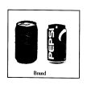

编辑：donghk
2019-04-29 14:28:45
本篇文章为同学们整理了高三年级第二学期英语期中练习试题，试题共分两卷，包括听力、英语知识运用、阅读理解、写作，下面就一起来练习吧。
本试卷分为第Ⅰ卷（选择题）和第Ⅱ卷（非选择题）两部分.共150分，考试时间120分钟.
注意事项：
1．答试卷第I卷时，每小题选出答案后，用2B铅笔把答题卡I上对应题目的答案选中涂满涂黑，黑度以盖住框内字母为准。如需改动，用橡皮擦除干净后再选涂其它答案项。在试卷上答题无效。
2．答试卷第Ⅱ卷时，必须用黑色字迹的签字笔按题号顺序答在答题卡Ⅱ的答题区域相应位置内，未在对应的答题区域做答或超出答题区域做答均不得分。在试卷上答题无效。
第I卷（三大题，共115分）
第一部分：听力（共两节，满分30分）
第一节 （共5小题；每小题1.5分，满分7.5分）
听下面5段对话。每段对话后有一个小题，从题中所给的A、B、C三个选项中选出最佳选项，并标在试卷的相应位置。听完每段对话后，你都有10秒钟的时间来回答有关小题和阅读下一小题。每段对话仅读一遍。
1．How does the man like to begin his lecture ?
A．With a laugh . B．With a smile. C．With a funny story.
2．What does the man do ?
A．A driver . B．A policeman . C．A gatekeeper .
3．Where are the two speakers ?
A．At a bus stop . B．In a shop . C．In a hospital .
4．What is the probable relationship between the two speakers ?
A．Teacher and student . B．Classmates . C．Mother and son .
5．What might have happened ?
A．An earthquake . B．A fire . C．A gas accident .
第二节 （共15小题；每题1.5分，满分22.5分）
听下面6段对话或独白。每段对话或独白后有几个小题，从题中所给的A，B，C三个选项中选出最佳选项，并标在试卷的相应位置。听每段对话或独白前，你将有时间阅读各个小题，每小题5秒钟；听完后，每小题将给出5秒钟的作答时间。每段对话或独白读两遍。
听第6段材料，回答第6至第7题。
6．What time did the woman think Cindy would come ?
A．At 4:00. B．Before 4:00. C．After 4:00.
7．Where does the conversation take place ?
A．At the man’s home . B．At a café . C．At the woman’s home.
听第7段材料，回答第8至第10题。
8．How will they travel ?
A．By train . B．By bus . C． By plane .
9．When should the man book the traveling in advance ?
A．Four months . B．Eight months . C．Ten months .
10．What is the purpose of the man ?
A．To book a ticket . B．To give some details . C．To ask for information .
听第8段材料，回答第11至第12题。
11．What will be broadcast on television on October 10th ?
A．Cartoon films . B．At Talk Show . C．A scientific program .
12．Why should the program be easy to understand ?
A．It is meant for nonscientists .
B．It is simple enough for children .
C．It will be shown after school .
听第9段材料，回答第13至第14题。
13．What was the man worried about at first ?
A．His family . B．His biology paper . C．His birthday party .
14．What will be woman do over the weekend ?
A．Celebrate her grandmother’s birthday .
B．Work on her biology paper .
C．Read at the library .
听第10段材料，回答第15至第17题。
15．How many places will Mr. Robertson visit in China ?
A．Two . B．Three . C．Four .
16．How will Robertson go to Xi’ an ?
A．By plane . B．By train . C．By car .
17．Where was Robertson born ?
A．Australia . B．England . C．China .
听第11段材料，回答第18至第20题。
18．Who is the speaker ?
A．A policeman . B．David’s neighbor . C．David’s friend .
19．What can you learn from the story ?
A．The speaker lost the key to the door .
B．The speaker forgot to feed the birds .
C．David’s neighbor has fed the birds .
20．What do you think of the speaker ?
A．Honest . B．Careful . C．Humorous .
第二部分：英语知识运用（共两节, 满分45分）
第一节：单项填空（共15小题，每小题1分，满分15分）
从A、B、C、D四个选项中，选出可以填入空白处的最佳选项。
21．The salesman said that thief was a young man with brown hair .
A．the; a B．the ; 不填 C．a; 不填 D．a ; a
22．Nowadays , people usually think if you enter a key university , you are your parents’ .
A．pride B．luck C．value D．cheer
23．When Edison invented the light bulb , he tried over 2000 experiments he got it to work .
A．as B．after C．when D．before
24．The public transportation is very convenient in that big city , so there be any difficulty in traveling around .
A．mustn’t B．wouldn’t C．shouldn’t D．needn’t
25．It is reported that the 2006 FIFA World Cup on June 9 in Germany .
A．would hold B．will be held C．is going to hold D．is being held
26．—What is the meaning of the saying “Whenever you fall , pick something up ?”
—It tells us to hope even when coming across failure ; try to learn something valuable from it .
A．look for B．call for C．take up D．give up
27．—Everyone was at the party except you . What happened ?
—I after Mike , my pet dog , at home . He was ill .
A．have looked B．was looking C．would look D．had looked
28．His mother worried that he spent too much time on the computer and not enough time .
A．to study B．study C．studied D．studying
29．I was shocked by the news , which made me realize terrible problems we would face .
A．how B．which C．what D．that
30．Taiwan-born filmmaker Ang Lee won the best director Oscar at the 78th Academy Awards ,
the highest honor in American movie fields .
A．to consider B．considering C．consider D．considered
31．—Tom has hurt his leg .
—Really ?
A．Who did that B．What’s wrong with him
C．How did that happen D．Why was he so careless
32．Today’s basketball match as one of the most exciting matches that these two teams have ever played .
A．regards B．ranks C．treats D．thinks
33．Ebay , Amazon and Wal-Mart are popular websites people can sell goods to each other .
A．where B．which C．when D．whose
34．He is always helping people without expecting anything .
A．in need B．in fact C．in danger D．in return
35．With ticket prices rising , TV over as the typical way of watching a game for the young and old .
A．has taken B．had taken C．was taken D．is taken
第二节 完型填空（共20小题；每小题1.5分，满分30分）
阅读下面短文，撑握其大意，然后从36—55各题所给的A、B、C、D四个选中项，选出最佳选项
In Glasgow , Scotland , a young lady, like a lot of teens today , got tired of home . The daughter objected to her family’s 36 lifestyle and said , “I don’t want your God . I am leaving !”
She left home .Before long , she was disappointed and unable to find a job , so she took to the streets to do everything she could to 37 . Many years passed by , her father died , her mother grew 38 , and the daughter became more and more entrenched (固执) in her way of life .
No contact was made between mother and daughter during these years . The mother , having 39 her daughter’s whereabouts , went to the poor part of the city in 40 of her daughter . She stopped at each of the rescue missions with a simple 41 . “Would you allow me to 42 this picture ?” It was a picture of the smiling , gray-haired mother with a handwritten 43 at the bottom : “I love you still…come home !”
One day the daughter wandered into a rescue mission for a hot meal . She sat 44 listening to the service , all the while letting her 45 wander over to the bulletin board . There she saw the picture and thought , could that be my mother ?
She couldn’t 46 until the service was over . She stood and went to look .It was her mother , and there were those words , “I love you still…come home !” 47 she stood in front of the picture , she wept . It was too 48 to be true .
It was night , but she was so 49 by the message that she started walking home . 50 the time she arrived it was early in the morning . She was afraid and 51 her way timidly . As she knocked , the door 52 open on its own . She thought someone must have broken into the house . Concerned for her mother’s 53 , the young woman ran to the bedroom and shook her mother awake and said, “It’s me ! It’s me ! I’m home!”
The mother couldn’t believe her eyes . They fell into each other’s arms . The daughter said , “I was so worried and 54 someone had broken in.” The mother replied gently , “No, dear . From the day you left , that door has never been 55 .”
36．A．modern B．religious C．awful D．simple
37．A．earn money B．help others C．get from D．become famous
38．A．lonelier B．slower C．elder D．older
39．A．told about B．heard of C．learned from D．talked to
40．A．sight B．charge C．search D．need
41．A．request B．remark C．question D．speech
42．A．print out B．look at C．send off D．put up
43．A．record B．advice C．message D．notice
44．A．sensitively B．absent-mindedly C．devotedly D．carefully
45．A．eyes B．hands C．thoughts D．imaginations
46．A．help B．move C．wait D．listen
47．A．After B．Since C．Until D．As
48．A．lucky B．good C．happy D．certain
49．A．astonished B．touched C．interested D．ashamed
50．A．By B．At C．During D．Before
51．A．had B．led C．made D．held
52．A．seemed B．blew C．proved D．flew
53．A．safety B．health C．danger D．life
54．A．observed B．realized C．found D．thought
55．A．pushed B．opened C．locked D．fixed
第三部分：阅读理解（共20小题，每题2分，满分40分）
阅读下列短文，从每题所给的四个选项（A、B、C和D）中，选出最佳选项。
A
For twenty or thirty years Ernest Faber had owned cars of different sorts , and had driven them regularly , not only in England, but also in many countries of Europe and the Middle East . He was glad to think that he was an experienced driver , because he heard frequent complaints about the difficulties of passing the driving tests in these modern days . He was told that people tried unsuccessfully to pass the test five , seven , or even thirteen times . He heard of one man who failed the test , did no driving at all for a month , and then passed the next test without difficulty . One woman said that she failed several times in one part of the country . And so she went to another town and immediately passed . Faber was not sure whether to believe such stories or not .But he began to think that the results of the tests were frequently unreasonable .
Although it did not affect him in the least , Faber grew angry about all this . He decided to take the test himself . He was an excellent driver ;and if he failed , that would prove that his doubts about the examiners were correct . And then he would write to the newspapers to tell everyone what happened .
About two months later the following letter appeared in one of the leading papers of England : “Dear sir .
During the last twenty-seven years I have driven cars thousands of miles in thirteen different countries in all sorts of weather , and have never had an accident . I have never damaged anything belonging to anybody , and I have never seen the inside of a court of justice . I can take a motor-car engine to pieces and put it together again , and I have given driving lessons to men and women who have later passed the test . No policeman has ever said a sharp word to me . I am not a stupid person , and I have two university degrees .
For some time , I have felt doubtful about the driving test held in this country , because their results often seem unreasonable . I therefore decided that the time had come to test the examiners themselves . If anyone can drive a car , I can . I therefore paid the pound and sent my application in . It is unnecessary to tell you that I did not mention my great experience , my unusual ability as a driver , or my wide and exact knowledge of cars .
The day of the test came .
I very much regret to inform you that I passed .
Yours Faithfully
Ernest Faber”
56．Faber’s driving experience made him .
A．surprised B．satisfied C．destroyed D．troubled
57．It was said that the driving tests in different parts of the country were .
A．not equally difficult B．getting more and more difficult
C．intended to discourage women from driving D．intended to discourage people from owning cars
58．When Faber decided to take the test , .
A．he knew that he could do it free of charge B．he expected to get a driver’s license
C．he wondered if he was an excellent driver D．he thought even he himself might fail the test
59．The letter tells us that the driving test is .
A．difficult B．unfair C．reasonable D．unbelievable
B
Imagine that you are on a jury (陪审团) and you hear the testimony of an eyewitness who says that the accused person is guilty . You would probably vote to convict the accused, don’t you think ? Well, more often than not , you’d be wrong .
A few years ago , an experiment was done on an evening news show on WNBC in New York .Viewers were shown a film of what seemed to be a mugging . In this simulation (模拟),a man snatched a woman’s purse . He then knocked her down and ran face forward at the camera so that the viewers got a good look at him . Viewers were then shown a lineup of six men . They were asked to decide if the mugger was in the lineup and , if so , to tell which one he was . In effect , then, they had seven choices . The suspect (嫌疑犯) was either one of the six or he wasn’t even in the lineup .
Of the 2,145 people who called up to respond , 1,843 were wrong . That means about one in seven was right . This is what you’d expect from random choice .
Eyewitness accounts can be the most convincing evidence presented to a jury . Yet we are finding out that such accounts can be faulty . Something is just wrong . Why is this so ? Recent findings have removed doubts on whether memory can last long .We also know that it can be changed by things such as leading questions . Mistaken eyewitness accounts are common . They are also the major cause of innocent (无罪的) person being convicted in the United States .
60．The underlined words “to convict the accused” probably means .
A．to show that the accused is wrong B．to express that the accused person is true
C．to declare that the accused person is guilty D．to explain that the eyewitness is dangerous
61．Of the people who called up to respond , .
A．half of them were right B．2,145 were on a jury
C．six out of seven were wrong D．1,843 made seven choices
62．We also know that can be changed .
A．evidence B．memory C．eyewitness D．accounts
63．What is the passage mainly about ?
A．Evidence should be more convincing . B．Eyewitness accounts can be wrong.
C．Not all judges are good at their jobs . D．Major causes of innocent persons being convicted.
C
When you are advised to “get an education” if you want to raise your income , you are only told half the truth . What you should be told is to get just enough education to provide manpower for your society , but not too much education that would prove an embarrassment (窘迫) to your society .
Get a high school diploma (文凭), at least . Without that, you are occupationally dead , unless your name happens to be George Bernard Shaw or Thomas Alva Edison and you can successfully drop out in grade school .
Get a college degree , if possible . With a BA, you are on the launching pad . But now you have to start to put on the brakes . If you go for a master’s degree , make sure it’s an MBA, and only from a first-rate university . Beyond this ,the famous law of diminishing returns (报酬递减规律性)begins to take effect . Do you know , for instance , that heavy truck drivers earn more a year than full professors ? Yes , the average 1977 salary for those truckers was $ 24,000, while the full professor managed to average just $ 23,930.
A Ph. D is the highest degree you can get , but except in a few specialized fields such as physics or chemistry , where the degree can quickly be turned to industrial or commercial purposes , you are facing a dark future . There are more Ph. Ds unemployed or underemployed in this country than in any other part of the world by far .
If you become a doctor of Philosophy in English or History or Anthropology or Political Science or language or-worst of all-in Philosophy , you run the risk of becoming overeducated for our national demands .
Thousands of Ph. Ds are selling shoes , driving cabs , waiting on tables and filling out fruitless applications month after month . And then maybe taking a job in some high school or backwater (死气沉沉) college that pays much less than the janitor (门卫) earns .
Income and education are closely related . Far enough ,that is , to make you useful to the gross national product , but not so far that nobody can turn much of a profit on you .
64．According to the writer , what the society expects of education is to turn out people who .
A．will become loyal citizens to a nation B．can always take good care of themselves
C．will not be a shame to society or their families D．can meet the demands as a source of manpower
65．If you are as gifted as Bernard Shaw or Edison .
A．you can get a high school diploma without difficult
B．you can be professionally successful without a diploma
C．the least you should do is to get a diploma
D．you will be successful in grade school
66．Many Ph. Ds are out of work because .
A．they are of little commercial value to the society
B．they prefer easy jobs with more money
C．they are fewer jobs in high schools
D．they are wrongly educated
67．According to the passage , which of the following is NOT true ?
A．The higher your education level is , the more money you’ll earn .
B．If you are too well-educated , you may make things difficult for the society
C．One must think carefully before going for a master’s degree .
D．Bernard Shaw didn’t finish high school, nor did Edison .
D
“ONLY A COKE WILL DO”

“We don’t necessarily believe that new advertising , which might make consumers fell better about the Coke brand or better about the ads themselves , will actually result in consumers consuming more of the product,” Morgan Stanley’s Bill Pecoriello wrote in a research note the days after the investor ( 投资者) meeting . But Coke is optimistic it can regain its old magic , and is banking on a new slogan : “Welcome to the Coke side of life.”
BREAKTHROUGH HIT?
With PepsiCo about to surpass Coke as the beverage king on Wall Street—Pepsi’s market capitalization has soared in recent years to $97.9 billion, putting it less than a billion dollars behind its rival (对手) —the heat is on Coke . It’s set to launch a new marketing campaign in March , 2006. And having taken a quick look at Coke’s investor presentation on Dec. 7 in New York , my sense is that Coke may be moving in the right direction .
Given the continued shift by consumers away from soda—Coke’s stronghold —and into alternative beverages like juice , tea , and water , Coke badly needs a breakthrough hit . And given that shift away from soda , some analysts wonder whether even the catchiest new ads will be enough to put the fizz back into Coke .
SAME OLD , UPDATED.
The new flavors (口味) of PowerAde sports drink will probably enable Coke to continue stealing market share from PesiCo’s Gatorade brand . And Coke is getting a little more creative with packaging , including new , aluminum bottles of Coke that will be sold in nightclubs , and an 8.4-ounce “100 calorie” version of its flagship Coke that will appeal to women who want fewer calories and will like the fact that the small can will fit in their purse . I doubt whether other new products will be successful , including a new coffee-flavored soda called Coke-Cola Blak that I tried . Think carbonated coffee . But I’m not sure if the product , which Coke is pitching as an afternoon pick-me-up for the 35-and-over set , is going to pull people away from their afternoon Frappucino fix . And my opinion is that Vault , an orange-flavored energy drink , will have just as much trouble unseating Mountain Dew among teens as did Coke’s last attempt , a product called Surge .
If there is one concern I have about the fresh offerings Coke plans to launch this year , it appears that many of them are simply new brands , not new products .
68．According to the passage , we can know that .
A．Coke mainly depends on new products recently
B．Nowadays Coke is comparatively less popular
C．PesiCo has taken the place of Coke
D．Coke has few new brands
69．The underlined word “soared” means .
A．achieved B．dropped C．increased D．failed
70．When the middle-aged people feel tired , what would they prefer to drink in order to continue their work ?
A．Vault. B．Surge. C．Coke-Cola Blak. D．Frappucino.
71．What is the best title of the passage ?
A．Troubles in Coke Company B．Varieties of New Products
C．The Importance of New Advertisements D．The Relationship Between Coke and Pepsi

72．George Best used to be a .
A．writer B．politician C．British scientist D．football player
73．According to the article , whom was the literature award named after ?
A．Sergio Pitol . B．Don Quixote . C．The Jury . D．Miguel de Cervantes .
74．Most probably you can read these in a ?
A．newspaper B．novel C．fairytale D．textbook
75．Which of the following is true ?
A．Ellen Sirleaf became the first elected woman president .
B．Hwang Woo-suk has quit all the official positions .
C．George Best passed away because of his hardwork .
D．Sergio Pitol has won an award for English literature .
第Ⅱ卷（共35分）
第四部分：写作（共两节，满分35分）
第一节 情景作文（满分20分）
三月十四日上午，你校高三学生参加了体育毕业会考，请你根据下列图示，写一篇英文日记，并简谈你的体会。
注意：1．词数不少于60；
2．日记的开头已为你写好。
March 14, 2006 Sunny
It was a special day because I took the Final P. E. Test for Senior Three students .
（请将情景作文写在答题纸II指定区域内）
第二节 开放作文（满分15分）
请根据下面提示，写一篇短文。词数不少于50。
The entrance examination is coming . Your parents are trying their best to help you as the picture shows . You are telling your best friend what you feel about it .
（请将开放作文写在答题纸II指定区域内）
[page]高三年级第二学期期中练习
英语参考答案及评分标准
选择题答案
第一、二、三部分（Key to 1—75）
1.C 2.A 3.B 4.B 5.A 6.C 7.B 8.B 9.B 10.C
11.C 12.A 13.B 14.A 15.C 16.A 17.B 18.C 19.B 20.A
21.B 22.A 23.D 24.C 25.B 26.A 27.B 28.D 29.C 30.D
31.C 32.B 33.A 34.D 35.A 36.B 37.A 38.D 39.B 40.C
41.A 42.D 43.C 44.B 45.A 46.C 47.D 48.B 49.B 50.A
51.C 52.D 53.A 54.D 55.C 56.B 57.A 58.D 59.C 60.C
61.C 62.B 63.B 64.D 65.B 66.A 67.A 68.B 69.C 60.D
71.A 72.D 73.D 74.A 75.B
非选择题答案第四部分：
书面表达
第一小题：情景作文
Possible Version
March 14, 2006 Sunny
It was a special day because I took the Final P.E. Test for senior Three students .
The sun was shining brightly and we reached the stadium by bus . Under the guidance of the teacher , we gathered in groups at the entrance . Before the 1500-metre race , we had a five-minute warm-up, but I felt a little nervous because I was not doing well in long-distance running . With the teacher’s order , we began to run as fast as we could . Towards the end of the race , I was so tired that my pace slowed down and several runners caught up with me . However , encouraged by my classmates , I kept running with every effort . Finally I crossed the finishing line at 5′40″. To my delight , this is the best result I have gotten in a 1500-metre race .
Today I was a success ! Not only did I challenge the strength and endurance that a runner needed but also I learned that trying my best would really make a difference .
第二小题：开放作文
Possible version
As the entrance examination is drawing near , I am feeling a bit nervous . Fortunately my parents understand me and are trying their best to help me . They cook delicious food , buy different kinds of fruits and wash all my clothes . They won’t go to bed until I fall asleep . I’m very lucky to have such great parents . There is nothing I can do but study hard and do well in my coming examination .
附：听力材料
Text 1
M：I always begin my lecture with a joke . That puts the audience at ease .
W：They laugh to put you at ease .
Text 2
W：Excuse me . Would you mind if I asked you to drop me off in front of the park ?
M：In front of the park ?
W：Yes . If you’d be willing to , I’d really appreciate it .
Text 3
W：Is there anything in particular I can help you find ?
M：Well , actually , I’m looking for a digital watch .
W：Oh, I’m afraid we don’t have any more digital watches in stock , but we expect some to come in very soon .
Text 4
W：I heard you got a full mark in your math exams .Congratulations !
M：Thanks ! I’m sure you did a good job , too.
Text 5
M：What were you doing at that time ?
W：I was cooking some eggs . Suddenly the table began to move . The cups fell onto the ground and were broken . The light went out suddenly . I couldn’t help crying .
M：Did you go out at once ?
W：No, I couldn’t find my way in the darkness . So I stayed in the bathroom .
Text 6
M：Hello , Jane . May I join you ?
W：Hi , Fred . Sure . Have a seat , won’t you ?
M：I was just having a cup of coffee .
W：So was I . You didn’t happen to see Cindy anywhere around , did you ?
M：No . Are you waiting for her ?
W：Yes . She said she’d meet me here at four .
M：Well , its’ not four yet .
W：It isn’t ? Then my watch must be fast .Are you sure you’ve got the right time ?
M：Quite sure . It’s exactly three minutes to four . Cindy should be here in three minutes .
W：Oh, she isn’t that punctual . I might have to wait another ten minutes or so .
M：That should give us time for another cup of coffee . I’ll go and get some .
W：Make it three cups , Fred . Here comes Cindy .
Text 7
M：Hello , I’d like some information about trips to Katmandu .
W：Well , how can I help you ?
M：I hear there’s a special kind of bus with sleeping rooms .
W：Yes , that’s true .
M：How many people travel on the bus ?
W：Well, the bus sleeps ten . Usually there are eight travelers , two drivers , and a girl to act as your
tour guide .
M：So, we sleep comfortably in the bus .
W：Yes. It’s fully equipped for cooking , and weather permitting it’s got a shower system that we set up outside every evening .
M：We leave from London ?
W：Yes , and return to London .
M：Is there anything special we need to bring ?
W：Oh, we give everyone a list of suitable clothes and all the things to bring . Of course , space is limited .
M：Oh , yes , I understand that . Now can you tell me about the deadline for booking ?
W：Well , it depends . Usually six or eight months before your travel . Could you come in and we can go over the details ?
M：OK. I’ll come and see you next Wednesday .
W：OK, thanks for calling .
Text 8
W：Today ,Mr. Johnson will introduce us to an interesting television program .
M：Thank you , Mrs. Adams . The television program I am going to introduce is about the brain . It will be shown on October 10th . It’s a new public television show produced in New York City .Some interesting topics that will be discussed are dreaming , memory and depression . These topics will be illustrated by using computer animations of the brain to make explanations easy to follow .The show is not for children . but don’t worry ; it’s not intended for scientists , either . I think the program will be helpful with the work we are doing in class on the brain . I hope you’ll watch it .Remember , it’s on October 10th .
Text 9
M：Hi , Sue . Where have you been ?
W：Oh. Hi, Dan . I was just at the library . I have to hand in my biology paper tomorrow .
M：Tomorrow ? Oh, no ! I thought it wasn’t due till Monday .
W：Oh. Don’t worry . It is due Monday . But I’m going away for the weekend and won’t be back till Monday night .
M：Oh, where are you going ?
W：California . We’re having a family party . It’s my grandmother’s ninetieth birthday , so all the cousins and aunts and uncles are going . She planned the whole thing herself .
M：Wow. That’s great . How many people will be there ?
W：Around sixty . My family is big and spread out but we’re pretty close . So have you started working on your biology paper ?
M：Yeah . I’m doing it on bees .
Text 10
W：Excuse me , sir but aren’t you Mr. Robertson from Australia ?
M：Yes , I am .
W：How do you do , Mr. Robertson ? Welcome to Beijing !
M：How do you do ?
W：I’m Lily from Beijing .
M：Oh , it’s great to meet you , Miss Lily .
W：I’m also glad to meet you . Please come this way . That’s our car .Your baggage can go in the boot .
M：Good .
W：Is this your first visit to Beijing ?
M：This is my first visit to China . It has been my long-cherished desire to pay a visit to your beautiful country .
W：You are going to stay in Beijing for …
M：Five days . And then I have to fly to Xi’an . My wife will be waiting for me in Hong Kong . But on my way to Hong Kong I will visit Guilin first .
W：That’s a wonderful idea . Well , Mr. Robertson , were you born in Australia ?
M：No, I was born in London .
W：No wonder I can understand you so well .
M：Yes , I speak “British English with a bit of an Australian accent .
W：I find it hard to understand some Australian friends who speak Australian English .
M：Do you ? I think it is because we Australians speak very quickly .
Text 11
My friend , David kept birds . One day he phoned and told me he was going away for a week . He asked me to feed the birds for him and said that he would leave the key to his front door in my mailbox . Unfortunately , I forgot all about the birds until the night before David was going to return . What was worse , it was already dark when I arrived at his house . I soon found the key David gave me could not unlock either the front door or the back door . I was getting hopeless . I kept thinking of what David would says when he came back .I was just going to give up when I noticed that one bedroom window was slightly open . I found a barrel and pushed it under the window . As the barrel was very heavy , I made a lot of noise . But in the end , I managed to climb up and open the window . I actually had one leg inside the bedroom when I suddenly realized that someone was shining a torch up at me . I looked down and saw a policeman and an old lady , one of David’s neighbors . “What are you doing up there ?” asked the policeman . Feeling like a complete fool , I replied , “I was just going to feed Mr. David’s birds .”
精品学习网(5iedu.com.cn)在建设过程中引用了互联网上的一些信息资源并对有明确来源的信息注明了出处，版权归原作者及原网站所有，如果您对本站信息资源版权的归属问题存有异议，请您致信qinquan#5iedu.com.cn(将#换成@)，我们会立即做出答复并及时解决。如果您认为本站有侵犯您权益的行为，请通知我们，我们一定根据实际情况及时处理。